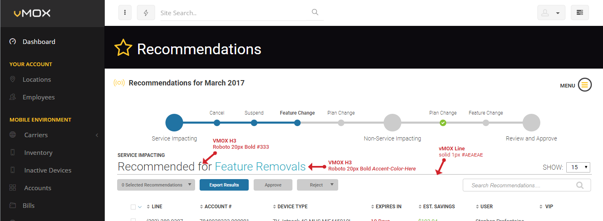

Because No One Ever Said "This Is Too Easy To Understand"
vMOX Standard Data Table
Created June 7 2018
Composed by Craig Graham
Key Points - Data Tables:
- Data Table layout was designed to be modular in order to meet different functionality requirements by adding or removing widgets
- We follow standard design prinicples for our table views, such as those developed by the UX Collective
- Mockup can be viewed at: vMOX Standard List Example Mockup
The data tables view was designed to be modular so that we can use the same design to fit most of the use cases where a data table might be required. The basic idea is that the data table is built from ten basic building blocks (workflow title, feedback area, table title, filters & filter fly-out, action buttons, search, sorting, pagination, additional data view and data content) which can be shown/hidden based on the functionality requirements for the view.
Data Table View Template
Data Table View Componets
Process Workflow Title Area
Typically we find that data tables are required as part of a larger user goal. In these cases it is helpful to call attention to that higher level goal here in the Process Workflow Title Area. This is the designers opportunity to set the expectations for the page early for the user by providing additional context. For example, you might have a multiple step process (ie. creating recommendations) where each step the user needs to select options from data tables. In this case it makes sense for the Workflow Title to be Recommendations, but the name of each data table itself to be the type of recommendation the user is currently working with. Whenever it is relevant to do so we like to aid the user's recall by including an image or icon in this section.
Title on the Managing Communications View
View MockupTitle on the Managing Recommendations Page
View MockupFeedback Visibility Area
Perhaps the most important section of the page is the Feedback/Visibility area. This is the real estate we get to dedicate to informing the user that they are making progress toward any goal they might be trying to accomplish via the data table contents. For example if they are going through a multiple step process we can dedicate this area to displaying a progress indicator or if the user's goal is manually sort through the data and make a binary decision for each of the records we can keep track of the user's progress for them in this space. There are instances were the user will not be required to take any action with the contents of the data table and therefore it does not make sense to track any sort of status or user progression. In those cases this area should be simply hidden from view.
Feedback Visibility Area on the Communications Management View
View MockupFeedback Visibility Area on the Recommendations Approval View
View MockupTable Title and Context Value
These two sections work together to set the user's expectations for the content contained in the data table. The context value is the designers opportunity to specifically call out an important delimiter that has been applied to the table. For example, a data table showing billing information for the last complete billing cycle could be titled: Most Recent Billing Data. However if we add the context value to it, it would read: Most Recent Billing Data - January 2018. Every data table should have a title, but not all will have a context value. By practice we style the context value with a different color or weight to help it stand out to the user. For a list of the different accent colors available to display the context value, please visit the vMOX Colors Style Guide.
Table Title - Communication Management
View MockupTable Title - Recommentations Approval
 View MockupFilters & Filters Fly-out
For those data tables were it would be useful for the user to be able to filter, we can display the different filter categories to the left of the data table title. The categories should be displayed along with a downward facing chevron indicating that the filter category title can be clicked on to display a context menu below it. The category title should act as a toggle to hide and show the context menu. Every filter option should also have a count associated with it, which indications to the user how many results they should expect to see after applying the filter. Filters work using a logical AND operator and the expected filter counts should be updated as each filter is applied in order to keep the users expectations accurate with the actual results that will be produced by applying their specific filter combination.
Filter Controls
View MockupIf there are more filter categories than can fit between the data table title and the row display count control then a "more" category is added. Should the user click on the more category they will be presented with a modal fly-out (it is modal because we do not want to allow the user to interact with the page while they are building their filter) which contains the remaining filters they can apply. Filters are not applied to the result set until the user clicks on apply, whether that be in the fly-out or the context menu dropdown. With each filter the user applies the count for that category, including "more" should there be such a category, is updated to reflect the total number of filters applied in that category.
Filter Fly-out
View MockupAction Buttons Area
When the user is viewing a data table in order to complete a defined action, such as review records for approval or to take a bulk action, the action buttons area is where we place the buttons they will interact will in order to carry out those actions. These buttons are typically disabled until the user has made at least one selection in the data table. Clicking on a button applies the action to the records and changes those records state to reflect the action button that was selected, but does not hide the record. If the user wants to hide the record, it needs to be a filter option that the user can turn on and off in order to follow the design principle of feedback and visibility. If there are more action buttons are required than are able to fit in this space then a "More" dropdown button should be created to hold the addition actions in a dropdown context list that the user can select from.
Action Bar
View MockupSearch
The data table search bar should always been included in a data tables view. It should have hint text which helps the user realize that it is a dedicate search for the content of the data table only, not a global search. Typing a query into the search will filter the results of the data table as the user types.
Sorting Area
Each column in the data table should be capable of being sorted using the up and down triangles located to the left of the column name. The triangles are both gray when they are in their default state. clinking on a triangle will sort the data table based on that columns content in the direction corresponding to the triangle that was clicked (up for acceding, down for descending). Once an order is selected the triangle will have a fill color of link blue (#2173A3). Clicking on a selected triangle will toggle the sorting for that column back off. The sorting works on a logical AND operator. This means if I sort ascending on column A and then descending on column B, it will sort column B within the bounds of the already sorted column A.
Pagination
The pagination bar should only be visible when there is at least one or more record in the data table. If the user is viewing the upper or lower bound of the available pages (ex page 1 or the highest possible page) then the corresponding arrow should be disabled to further reinforce that the user has reached the bounds of the pagination options. The pagination bar should never show more than five page numbers. If there are five or less pages the user should see all the pages listed. If there are more than five pages then the user should see 1 . . . 4 5 6 . . . MAX.
Data Table Records
The primary concern when creating data tables is to make sure that the content held within them is quick to scan and easily digestible. This means it is important to maintain equal spacing between columns, keep font sizes large enough that people can read them and to avoid displaying repeating content (ie. move words that appear in every row to the column name). The user should get visual feedback when they hover a row and when a row has been selected via checkbox should it be an option. As far as the actual content within the row is concerned we have four rules for text alignment (1) Numeric Columns should be right aligned, (2) Text Columns should be left-aligned, (3) Column Names should be aligned according to their column content and (4) Never use center alignment. We should only use tabular fonts (ex. Calibri & Roboto) where all chars are identically-sized (as opposed to proportional).
Example Data Table Row
View MockupAdditional Data View
In the case that there is more data than can fit across a row, our approach is to move that data into one of two alternative visualization structures. In both of the options the user should presented with all of the information contained in the row, plus the additional content which is not seen in the row. The user can access these structures by clicking on the entirety of the row or by clicking on a "More Details" links. There are two different options for displaying additional data, each with their own merits and disadvantages. The first, and preferred solution is a fly-out that is fixed to the right side of the screen. This approach allows the user to continue to interact with the majority of the data table and is a less distracting interaction than other options. The fly-out should be shown using a simple slide left animation and it should only scroll when the user's mouse is within the bounds of the fly-out itself. The second option is an expandable row, which pushes the rest of the rows in the table down in order to display the additional content in a box that points to originating row. This approach provides the design more space to work with, but comes at a higher interaction and processing cost. The fold down forces the user to adapt to a new view, scroll within the data table itself to view the content and could impose a delay in order to process all the new positions of the elements as the expanded row pushes down. The expandable row should be design in a way that maximizes the use of horizontal space over vertical space in order to lower the interaction cost to the user.
Additional Data View Fly-out
View MockupAdditional Data View Expanded Row
View MockupResponsive Design
Tablet
No Tablet View at This Time...
Mobile
No Mobile View at This Time...
Related Icons & Images
No Related Icons at This Time...
Similar Components
No Similar Components at This Time...